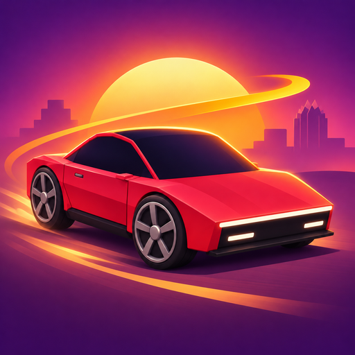
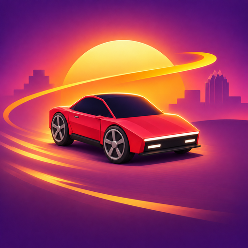

App icon · sunset roadster · Revision 1

Large car silhouette for standard icons and Apple home screens. Corners shown here are a CSS preview; the PNG is square.

Separate composition keeps the complete car inside the central safe area for platform masks.
Circle
Rounded square
Safe circle only · radius 40%
The last crop deliberately hides everything outside the guaranteed safe circle. No mask or corner shape is baked into the exported PNGs.